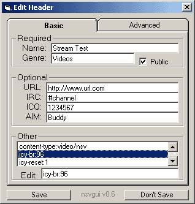

Header File
The header file provides the shoutcast server with the necessary info about your stream. nsvgui has a header editor designed to keep this more user-friendly. If you know how header files work, then click Advanced and you'll get it in the basic txt format.

Name: This is where you enter the name of your stream. Since this is what potential watchers see first, try to keep it creative and attention-grabbing.
Genre: This is where you enter what kind of videos you will be streaming.
Public: This tells shoutcast whether to report this stream to the shoutcast yellowpages. If you keep it public, then it'll show up in the Internet TV section of Winamp, and get lots of traffic from strangers. If you keep it off, then only people you give the address to will be able to find it.
Optional data: This info will show up if the user connects to your stream in a web browser.
Other: This is where you add any additional tags to the header. You shouldn't need to mess with any of these.
Almost there
Go
back to index